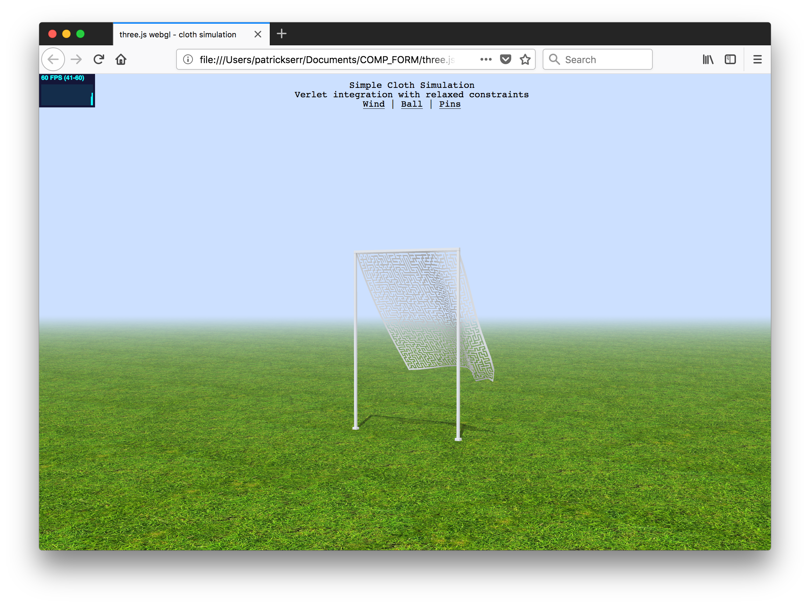

Conception
I was approached to assist in the branding for a symposium at the New School on the topic of Digital Materiality. Initially, the minimum output would need to be a set of static images and gifs. I decided to go above and beyond this baseline and take this job as an opportunity to apply ideas from Comp Form in my personal work. My career is going to be determined by creating solutions for clients, so I saw this as a perfect opportunity to explore the ways in which experimental strategies could be embedded in real-world deliverables.
I wanted to explore the role that motion, interactivity, and parametric design—which have all featured heavily in my output for the class—could play in branding. I saw that these could be not only applied to programmatic art-making but bring richness to a product that also had practical constraints around conveying information.
Process
A majority of my graduate coursework has focused on iterative design as an ongoing process of testing and refinement—bringing an idea slowly from lo-fi sketches to polished final designs. While these are sometimes built out into interactive clickable prototypes, coding has rarely been an expectation. As a designer, there is an expectation of divisions between disciplines and specializations—the designer hands a prototype off as a final product to the front-end developer who will then realize their vision.
Working natively in code upends some of these expectations and provides another way of approaching the design of digital products. Working in code is faster, and at times messier. Real-world constraints of the limits of coding libraries and your technical ability inform the design decisions you make. Working in code also allows for serendipitous accidents—it opens possibilities that might not otherwise be imagined.
I decided to apply my experience of coding out multiple “sketches” each week to the process of iteration. I went about presenting multiple options by developing each to “proof-of-concept” level — enough to demonstrate core idea (a key animation or interaction) for client appraisal. This process closely mirrored the idea of “riffing on a theme” that was carried through each week in Comp Form.
Option 1
For the first option, I decided to re-interpret some ideas I had played around with in the “parametric design” week. I wanted to see if the technique of using svgs with CSS animation to create type distortions could be equally satisfying for titling.
Option 2
The second option was also highly inspired by parametric design. I had been thinking about the possibilities of involving users more deeply into a website by offering opportunities for customization and unexpected interactions. I was also highly inspired by Madison Bozinoff’s use of html sliders as a compositional element (to create text).
The result of these inspiration points was a digital “poster” that used html sliders both as a visual element (horizontal rule) and point of entry for changing the look and feel on the fly.
Option 3
My third option had an unexpected inspiration point: the simple edge-detection class example presented by Justin in our “Strategies” week. Seeing the bouncing ball as a starting point, I realized that every element of the code could be expanded upon. Why not multiple balls? Why not multiple speeds and directions of travel? Why not create linkages between them to create an overall system that morphed like an old-school screen saver?
The key moment for this design came from the decision to apply text to this model, which I had been contemplating throughout the class. What are the limits of legibility? I thought that the linkages could create a chain that draws the users’ eye in the right order, regardless of the hierarchy of individual words on the page.
Option 4
My fourth option came from both old-school html marquees (or their modern interpretations — see brutalistwebsites.com) and animations I had made involving text. I wanted to explore another way of introducing motion and pattern to type that wasn’t the same distorted effects I had explored in previous sketches and the first option I would present to the client.
Option 5
My final option was actually completed too late to show the client, but I felt compelled to create it nevertheless. I had begun exploring the possibilities of using three.js as a modeling environment, and wanted push and explore further. My initial experiments had tried to create a type of gallery environment for showcasing programmatically created forms. How could the immersive world-building made possible by a WebGL environment be used to serve a more pragmatic purpose?
I found one of the code examples provided in the three.js master file especially intriguing. A flag on a pole is rendered in a field of grass, like some abstract soccer goal. My mind immediately went to environmental graphic design and banners. What if this flag could be used as a dynamically moving banner to advertise the conference?
Final Output
After consulting with the client, Option 2 moved forward. This was a sensible decision: the type of user agency engendered by the parametric design fit neatly into the theme of the symposium. Over the next week or so, the design moved from initial sketch to final design. Options to change font, text style, color, and shadow create hundreds of possible permutations. The initial design was added to in order to address practical concerns: more speaker and location information was added, along with a call to register for the event.